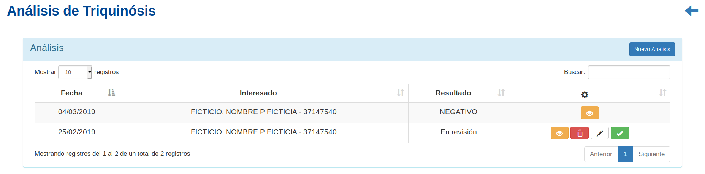
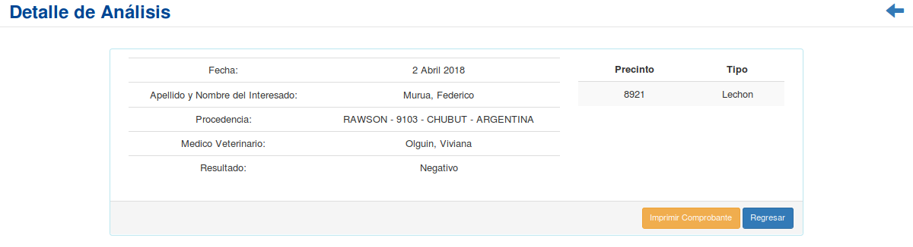
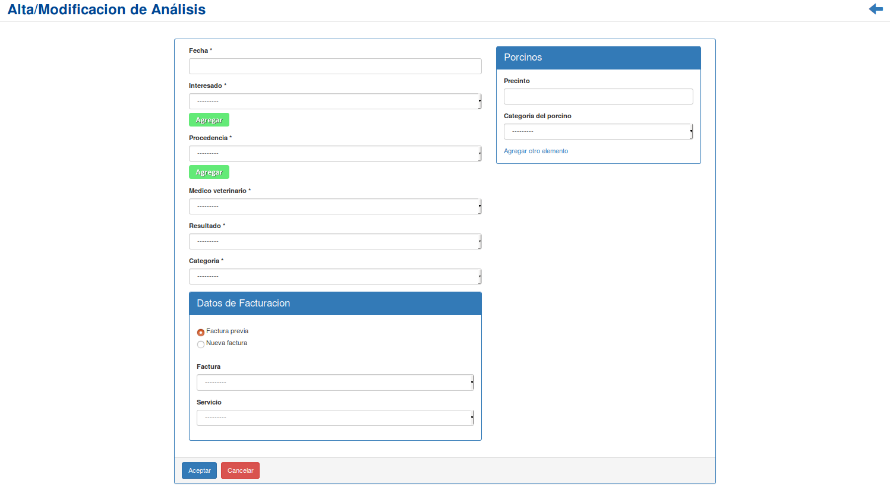
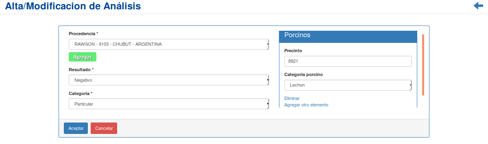
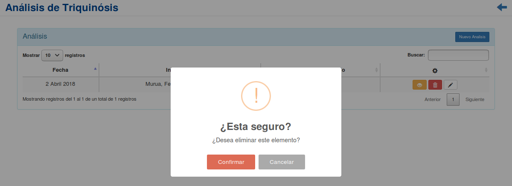

Análisis de Triquinosis¶
Se presentará una pantalla que contendrá un listado con todos los Análisis que se encuentren registrados en el sistema hasta la fecha.
Junto con el listado, se presentarán un conjunto de funcionalidades que permitirán manipular cada Análisis.
Estas funcionalidades son:
Además, si el usuario desea Registrar un nuevo Análisis:
Si el usuario desea ver el detalle de un Análisis, deberá seleccionar en la columna de acciones asociado al Análisis y presionar el ícono
DetalleUna vez realizado el paso anterior aparecerá la siguiente vista emergente:
En esta parte el usuario podrá observar la información adicional del Análisis. Si desea imprimir el comprobante, deberá presionar el botón
Imprimir Comprobante, de otro modo, si desea volver al listado inicial, presionará el botónRegresar.
Nuevo Análisis¶
Si el usuario desea crear un nuevo Análisis, deberá presionar el botón
Nuevo Análisis.A continuación el sistema lo redirigirá a la siguiente pantalla:
En esta parte el usuario se le presentará un formulario y deberá ingresar los datos solicitados para dar de alta un nuevo Análisis.
Atención
El sistema siempre validará que la información ingresada sea correcta. En caso de que los datos ingresados sean incorrectos el sistema lo informará. En este punto, las posibles causas de errores son:
- Uno o más campos obligatorios vacíos.
- Uno o más campos con un formato incorrecto.
Una vez completado el formulario, se volverá a la pantalla que contendrá el listado de Análisis.
Modificación de Análisis¶
Si el usuario desea modificar los datos de un Análisis, deberá seleccionar en la columna de acciones asociado al Análisis y presionar el ícono
Modificar.Una vez realizado el paso anterior, el sistema lo redirigirá a la siguiente pantalla:
En esta parte al usuario se le presentará un formulario y deberá actualizar los datos asociados al Análisis.
Atención
El sistema siempre validará que la información ingresada sea correcta. En caso de que los datos ingresados sean incorrectos el sistema lo informará. En este punto, las posibles causas de errores son:
- Uno o más campos obligatorios vacíos.
- Uno o más campos con un formato incorrecto.
Una vez completado el formulario, el usuario deberá presionar el botón
Aceptary el sistema se encargará de actualizar los datos del Análisis seleccionado.
Eliminar Análisis¶
Si el usuario desea eliminar un Análisis, deberá seleccionar en la columna de acciones asociado al Análisis y presionar el ícono
EliminarUna vez realizado el paso anterior aparecerá la siguiente ventana emergente (modal):
En esta parte el usuario deberá decidir si confirma la eliminación del Análisis o no. Si desea confirmar la eliminación deberá presionar el botón
Confirmar, caso contrario, presionará el botónCancelar.